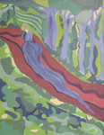

Amy Jackson
Writings
Rebekah's Closet is part memoir and part literary fiction/fantasy,
based on Amy's own true story, then taking off into fiction.
Scroll down to read reviews!
To read the first ten chapters of Rebekah's Closet, click here
More about the book ...
Local Author Does Time Travel … Rebekah’s Closet
Rebekah’s Closet, is the first book by Amy Jackson.
The novel, Rebekah’s Closet, the cover acrylic painting
(see thumbnail image above) of which was created especially
for the book by Jackson, is based on her true story growing up
with child sexual and physical abuse in her family, and learning
not only to survive it, but to overcome and transform it
through various forms of creativity.
The book describes Rebekah’s journey throughout her life
to discover her adventurous and dark, creative and dangerous sides,
and like Persephone, she must explore the depths before
she can come through to the Light and find her own balance
among the more than twenty personalities she is left to live with,
to somehow create a wholeness out of her extremely fragmented self.
In addition, there are sublime passages of beauty, time travel,
poetry, escapades with luminaries such as Voltaire, Thomas Jefferson
and the mysterious Strange Man – and the leaders Rebekah seeks –
the poet kings! For Rebekah seeks not only to heal herself,
not to find vengeance against her abusers, but to heal
the troubled world around her, ultimately, to somehow bring about
global peace and bliss before the Millennium, in any way she can.
To buy a copy in PRINT from Amazon.com, click below:
To buy a copy in e-book format, you have multiple options! See below:
Rebekah's Closet Now on Kindle
Now also available for Nook, just search for Rebekah's Closet online: www.barnesandnoble.com
Now also available through Google Play
"This poignantly written novel follows the main character on her incredibly
brave journey as she attempts to build a new life while fighting
the ghosts of her past. Although heartbreaking at times to read
due to the reader's immediate affinity with the primary character,
Rebekah's Closet is a beautifully written book full of raw
emotion and exquisite sensory details.
The reader is transported to wonderful places
where the surroundings can be seen, felt and smelled -
whether is it a quaint café in France, or a sultry tropical jungle,
Ms. Jackson does a wonderful job describing,
in vivid detail, every aspect of the environment.
After reading this book, I feel that I have gained a
greater insight into both the challenges and resiliency
of children who face abuse and the ways in which healing
can occur when one opens their heart to new experiences.
I look forward to reading more books written
by this very talented author." -- Cyndi LaChapelle
"Amy's book is one of the best novels I've read in awhile.
Being from the same school and town as Amy,
she placed me back in the same era as she was writing.
I could clearly see myself sitting in one of the classrooms
at Cartersville High School. Her detailed description was impeccable.
I was even able to envision Paris through her eyes.
A truly talented artist, Amy is an upcoming Best Selling Author
to keep your eyes on. Well done, Amy!" -- Kathy McStatts-Fulton
"This beautifully written novel by Ms. Jackson takes the reader on journeys,
both physical and of the mind. It creates a beautiful doubt about what
is possible in the world. This is all achieved through being allowed
to follow the main character through her journey of healing and
transformation while working away from horrible abuse in her early
upbringing and through some failed relationships. We watch as Rebekah
struggles through life and ultimately finds a place of peace.
This is sometimes painful as the author pulls you deeply into
the characters world and life. It is worth the effort though as you
leave the book feeling rejuvenated and whole.
Ms. Jackson is able to take the reader to places deep in the imagination
of the main character and through the lovely streets of Paris as well.
It is a journey worth the time and exploration. It is tough to face
some of the abuse imposed on the main character but leads one
to understand the true nature of love and resiliency in children
who have suffered abuse and indeed in all of us. I can only
hope that future efforts by Ms. Jackson are in the works, as this
is as fine a first novel I have had the pleasure of reading." -- Jason Stelluto